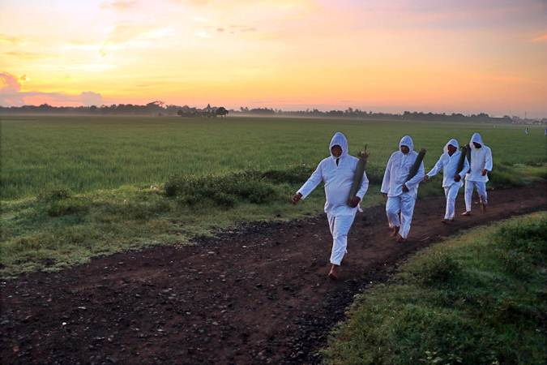

About
Kabupaten Indramayu adalah salah satu kabupaten di Provinsi Jawa Barat, Indonesia. Ibu Kotanya adalah Indramayu yang merupakan pusat pemerintahan, sedangkan titik keramaian justru berada di kecamatan Jatibarang dan Haurgeulis, hal ini dikarenakan di Jatibarang terdapat pusat Pasar dan memiliki akses yang mudah seperti Jalur Pantura dan Stasiun Kereta Api, hal ini yang sama juga terjadi untuk Kecamatan haurgeulis meski tak dilewati secara langsung oleh Jalur Pantura, namun Kecamatan ini dilalui oleh jalur Kereta Api. Kabupaten ini berbatasan dengan Laut Jawa di utara, Kabupaten Cirebon di tenggara, Kabupaten Majalengka dan Kabupaten Sumedang di Selatan, serta Kabupaten Subang di barat
Indramayu dilintasi jalur pantura, yakni jalur utama dan terpada di Pulau Jawa, terutama pada musim mudik lebaran. Kabupaten ini juga dilintasi oleh jalur kereta api lintas utara Pulau Jawa, dengan salah satu stasiun terbesarnya adalah Stasiun Jatibarang yang berada di kota Jatibarang, sekitar 19 km ke selatan dari pusat Kota Indramayu. Beberapa kecamatan penting di Wilayah Kabupaten Indramayu diantaranya adalah Indramayu, Jatibarang, Haurgeulis, Patrol, Karangampel, dan Terisi. Walaupun Indramayu berada di Jawa Barat yang notabene adalah tanah Pasundan yang berbudaya dan berbahasa Sunda, namun sebagian besar penduduk Indramayu mempergunakan Bahasa Cirebon dialek Indramayu, masyarakat setempat menyebutnya dengan Basa Dermayon, yakni dialek Bahasa Cirebon yang hampir serupa dengan Bahasa Cirebon yang dipergunakan di wilayah pusat Keraton Cirebon di Kota Cirebon, dalam Bahasa Cirebon dialek Indramayu tata bahasanya terbagi menjadi dua yakni Basa Besiken (dipergunakan untuk berbicara dalam tatanan resmi dan menghormati lawan bicara) dan Basa Ngoko (dipergunakan sehari - hari dalam pergaulan). Di bagian selatan dan barat daya kabupaten Indramayu yang dulu pernah masuk kedalam wilayah Kerajaan Galuh dan Sumedang Larang di Wilayah Selatan, sehingga mempengaruhi masyarakatnya berbahasa Sunda Khas Indramayu yang disebut Sunda Parean
Geografis
Secara Geografis, Kabupaten Indramayu berada pada 107"51'-108"36' Bujur Timur dan 6"15'-6"40' Lintang Selatan. Wilayahnya terletak di bagian utara provinsi Jawa Barat yang berbatasan langsung dengan Laut Jawa. Kabupaten Indramayu berjarak sekitar 52 km barat laut Kota Cirebon, 144 km dari Kota Bandung melalui Sumedang serta 205 km dari Jakarta arah timur. Seluruh wilayahnya merupakan dataran rendah hingga pesisir. Ada sebagian daerah yang memiliki perbukitan terutama di perbatasa Kabupaten Sumedang yaitu Dusun Ciwado Desa Cikawung, Kecamat Terisi, Indramayu. Dan sebagian wilayahnya Sanca, Kecamatan Gantar.
Sejarah
Sejarah Kabupaten Indramayu berkaitan erat dengan Raden Arya Wiralodra dan sosok Nyi Endang Darma yang memiliki kecantikan yang luar biasa. Diceritakan bahwa Raden Arya Wiralodra merupakan anak dari Tumenggung Gagak Singalodra dari Banyu Urip di Bagelen. Arya Wiralodra memiliki cita-cita besar yaitu membuka daerah baru yang bisa diturunkan kepada anak keturunannya. Maka Arya Wiralodra melakukan tanpa brata di Gunung Sumbing selama tiga tahun untuk meminta petunjuk daerah mana yang bisa dibuka.
Di akhir pertapaannya Arya Wiralodra mendapatkan wangsit agar pergi dan membuka hutan di lembah Sungai Cimanuk. Berangkatlah Arya Wiralodra dengan ditemani oleh Ki Tinggil mencari daerah lembah Sungai Cimanuk. Dalam perjalannya, Arya Wiralodra terus berjalan ke arah barat hingga sampai kepada Sungai Citarum. Rupanya Sungai Cimanuk yang dicarinya sudah terlewat. Arya Wiralodra dan Ki Tinggil lantas berbalik ke arah timur. Hingga akhirnya kedua orang itu berhasil sampai ke aliran Sungai Cimanuk. Keduanya lantas membuka hutan di sana dan membangun perdukuhan yang luas.
Usai membuka hutan, Arya Wiralodra pulang ke Banyu Urip untuk menyampaikan keberhasilan itu kepada orang tuanya. Saat Arya Wiralodra tidak ada, datang seorang wanita cantik bernama Nyi Endang Dharma ke pedukuhan baru itu yang dijaga oleh Ki Tinggil. Di sana, Nyi Endang Dharma yang cantik jelita turut serta dalam membangun perdukuhan tersebut. Hingga suatu hari datanglah Pangeran Guru dan 24 muridnya. Perselisihan tidak terhindarkan antara Pangeran Guru dan Nyi Endang Dharma. Keduanya lantas terlibat pertempuran. Namun pertempuran berakhir dengan kemenangan Nyi Endang Dharma, sedangkan Pangeran Guru dan semua muridnya tewas. Ki Tinggil yang menyaksikan hal itu lantas menceritakannya kepada Raden Arya Wiralodra. Arya Wiralodra yang mendengar cerita itu muncul keinginan untuk menjajal kesaktian Nyi Endang Dharma. Keduanya kemudian terlibat perkelahian. Nyi Endang Dharma yang terdesak lantas memilih mundur. Sebelum menghilang, Nyi Endang Dharma berpesan agar Raden Arya Wiralodra tidak melupakan jasa-jasanya yang turut membangun pedukuhan baru itu.
Namun dalam versi yang lain disebutkan bahwa Nyi Endang Dharma ini merupakan istri dari Raden Arya Wiralodra. Maka, Raden Arya Wiralodra kemudian menamakan pedukuhannya dengan anama Dharma Ayu. Dharma diambil dara nama Nyi Endang Dharma. Sedangkan Ayu diambil dari kecantikan wanita tersebut. Dalam perkembangannya, penyebutan nama daerah ini berubah menjadi Dermayu, In Darmayu, dan kemudian Indramayu hingga sekarang. Raden Arya Wiralodra tercatat sebagai pendiri sekaligus Bupati Pertama Indramayu.
Sumber Daya Alam
Indramayu merupakan salah satu kabupaten di Jawa Barat yang merupakan daerah sentra pertanian. Sektor pertanian menyumbang 13,37 persen dari total Produk Domestik Regional Bruto Kabupaten Indramayu, penyumbang kedua terbesar setelah Sektor Industri (Migas). Selain itu data penduudk Indramayu berdasarkan sektor usaha utama menunjukkan 51,46 persen penduduk yang berusia diatas 10 tahun bekerja di sektor pertanian (BPS, SAKERNAS 2005). Dari luas wilayah Kabupaten Indramayu yang tercatat seluas 204.011 Ha, 54.35 persennya merupakan tanah sawah. Melihat potensi yang ada maka sektor pertanian merupakan sektor yang patut mendapat perhatian lebih, baik dari pemerintah daerah maupun masyarakat pertanian itu sendiri.
Tanaman Pangan
Beberapa jenis tanaman pangan yang diusahakan di Kabupaten Indramayu, antara lain padi, jagung, ubi kayu, ubi jalar, kacang tanah dan kedelai. Produksi terbanyak adalah padi sawah sebanyak 1.211.350,95 ton yang berarti mengalami penurunan sebanyak 4,22% dari 1.264.685,81 ton di tahun 2005. Luas panen yang mengalami kenaikan dari 195.254 Ha menjadi 198.749 Ha dipengaruhi oleh produktivitas yang menurun dari 64,77 kw/Ha di tahun 2005 menjadi 60,95 kw/Ha di tahun 2006. Keadaan ini dapat dipahami karena luas areal untuk tanaman padi cukup luas jika dibandingkan dengan luas areal yang ditanami pangan lainnya yaitu seluas 110.877 Ha, sedangkan tanaman pangan lainnya berkisar antara 100 hingga 3.000 Ha saja. Sedang untuk tanaman palawija Ubi Kayu merupakan komoditas dengan produksi tertinggi diikuti oleh kedelai, jagung, kacang hijau, kacang tanah, ubi jalar. Disamping tanaman pangan dengan padi sebagai primadona, Kabupaten Indramayu juga memiliki tanaman unggilan lainnya seperti mangga, pisang cabe merah, bawang merah, jagung serta kedelai. Tanaman perkebunan seperti kelapa, kelapa hibrida, kapuk, cengkeh, jambu mete, kopi, tebu, dan melinjo diusahakan di Kabupaten Indramayu.
Peternakan
Berdasarkan jenisnya peternakan dibedakan atas ternak besar, ternak kecil dan ternak unggas. Jenis ternak besar yang cukup dominan di Kabupaten Indramayu adalah sapi sebanyak 5.419 ekor, kerbau 1.747 ekor dan kuda sebanyak 152 ekor. Sementara ternak kecil yang cukup dominan adalah domba sebanyak 130.007 ekor kemudian kambing sebanyak 54.000 ekor. Sedangkan jenis ternak unggas terbesar adalah ternak ayam kampung, dimana pada tahun 2006 mencapai 2.095.100 ekor disusul itik sebanyak 829.791 ekor dan ayam ras sebanyak 610.178 ekor.
Perikanan
Sesuai dengan letaknya yang berada di pesisir pantai Indramayu merupakan salah Kabupaten penghasil ikan. Produksi ikan laut segar selama tahun 2006 mencapai 71.579,11 ton, walaupun mengalami peningkatan produksi dibandingkan dengan tahun sebelumnya yang mencapai 67.359,10 ton, nilai produksi mengalami penurunan.
Budaya
Indramayu sebagai kota budaya memiliki banyak tradisi budaya, yang merupakan salah satu destinasi yang wajib kita kunjungi dalam berwisata. Berikut ini beberapa kebudayaan dan kesenian yang dimiliki oleh Indramayu.
Jaringan
Jaringan merupakan sebuah upacara yang dilakukan oleh kaum remaja yang bertujuan untuk mencari pasangan hidup yang dilaksanakan pada malam bulan purnama. Kegiatan ini bertempat di desa parean Kecamatan Kandanghaur. Uniknya, terdapat sebuah paar terletak di Desa Lebak, Kecamatan Kandang Haur yang bernama Pasar Jodoh. Sebenarnya nama aslinya pasar Parean namun kini telah berganti menjadi pasar jodoh sejak bermula dari tradisi warga Desa Parean Girang yang berada di seberang pasar. Lantaran tak ada hiburan, saban malam minggu muda-mudi di sana kerap keluar untuk sekadar melihat hiburan.
Dalam menjalankan tradisi adat jaringan, para pria mengenakan kain sarung dan wanita memakai kain rajutan sebagai daya tarik. Salah satu versi asalm mula jaringan sendiri dikaitkan dengan kebiasaan para nelayan yang tidak melaut pada bulang terang datang, ini diyakini karena waktu terang bulan ikan-ikan di laut berdiam di dasar laut sehingga sulit ditangkap. Oleh karena itu, para nelayan berkumpul di pasar jodoh ini untuk menemukan pasangan hidup mereka.
Mapag Tamba

Dengan membawa air suci yang telah didoakan ke dalam bungbung bambu, para petani menyiramkan air ke perbatasan sahaw-sawah ke seluruh desa. Dalam menggelar adat Mapag Tamba yang merupakan sebuah upacara dilaksanakan pada masa tanam padi dengan tujuan untuk mengusir segala penyakit (hama) yang dapat merusak tanaman padi.
Mapag Sri

Mapag Sri merupakan upacara yang dilaksanakan dengan tujuan untuk mengungkapkan rasa syukur kepada sang pencipta atas tibanya masa panen, dengan cara melaksanakan pergelaran kesenian wayang kulit sehari semalam dengan lakon khusus dan biasanya dilaksanakan di balai desa.
Secara teknis, Mapag Sri tidak dilakukan setiap tahun walaupun masa panen secara berkala dilakukan. Ini terjadi akibat faktor keamanan, dan faktor buruknya hasil panen sehingga upacara ini tidak dapat dilaksanakan. Bila melihat dari urut-urutan upacara dalam lingkaran pertanian, upacara awalnya sebenarnya adalah Sedekah Bumi, lalu diikuti oleh upacara Baritan, dan barulah teralhir upacara Mapag Sri. Panitia untuk Upacara Mapag Sri biasanya dibentuk pada saat pembubaran panita upacara Baritan. Bisa juga panitia upacara Baritan dikukuhkan kembali menjadi panitia upacara Mapag Sri.
Nadran
Nadran merupakan sebuah cerminan dari sebuah hubungan manusia dengan sang pencipta dengan berupa ungkapan rasa syukur akan hasil tangkapan ikan dan mengharapkan akan meningkatnya hasil dari masa mendatang serta dijauhkan dari bencana dan mara bahaya dalam mencari nafkah di laut. Umumnya nadran diselenggarakan antara bulan Oktober sampai Desember di daerah Pantai Eretan, Dadap, Karangsong, Limbangan, Glayem, Bugel dan Ujung Gebang. Nadran sebenarnya merupakan suatu tradisi hasil akulturasi budaya islam dan hindu yang diwariskan sejak ratusan tahun secara turun-temurun. Kata nadran sendiri, menurut sebagian masyarakat, berasal dari kata nazar yang mempunyai makna dalam agama islam pemenuhan janji.
Ngarot
Ngarot sudah ada sejak abad 16 dan sampai sekarang masih diselenggarakan, terutama oleh masyarakat desa di Kecamatan Lelea setiap menjelang penggarapan sawah. Upacara dilaksanakan agar mendapatkan hasil pertanian yang melimpah dan upacara adat ini dilaksanakan setiap rabu, minggu keempat bulan november dimana pesertanya adalah para muda-mudi dengan kostum yang khas dan aksesoris yang gemerlap.
Ngunjung
Ngunjung yaitu upacara syukuran yang dilaksanakan di kuburan-kuburan yang dianggap keramat biasanya dilaksanakan pada bulan syuro dan mulud. Ngunjung/Munjung berasal dari kata kunjung yang artinya mengunjungi makam leluhur sebagai salah satu wujud syukur masyarakat yang disertai untuk berdoa.
Sedekah Bumi
Sedekah Byumi adalah upacara yang dilaksanakan oleh petani pada saat akan turun menggarap sawahnya. Biasanya dilakukan pada awal musim hujan sekitar bulan oktober sampai desember. Prosesi upacara ini biasanya dimulai dari berkumpulnya masyarakat disuatu tempat diikuti doa bersama dan setelah itu dilaksanakan upacara adat.
Wisata
Indramayu merupakan salah satu kota yang letaknya berbatasan dengan Laut Jawa di sisi utara. Wilayah pantainya pernah menyandang gelar pelabuhan besar dan bandar ternama di Pulau Jawa. Selain itu daerahnya juga menyimpan berbagai daya tarik yang menjadi tujuan wisata.
Islamic Center Indramayu
Masjid Islamic Center merupakan salah satu ikon destinasi wisata religi Indramayu. Nama masjid ini merujuk pada Syekh Abdul Manan, seorang ulama era 1800 masehi. Tokoh ulama tersebut membawa naskah-naskah kuno Islam yang kini tersimpan di Museum Bandar Cimanuk Indramyu.
Arsitektur bangunannya terlihat indah dan megah. Warna putih berpadu coklat muda mendominasi dinding, menara, hingga kubahnya. Aksen ala timur tengah menghiasi bangunan hingga taman di halamannya. Ditambah dengan bunga aneka warna, serta halaman rumputnya penuh dengan jejeran pohon-pohon kurma.
Pantai Tirtamaya
Pantai Tirtamaya menawarkan panorama indah laut lepas dengan kawasan yang bersih. Area berpasirnya berwarna kecoklatan dan berbatasan dengan rimbunya pepohonan di daratan. Ditambah dengan air lautnya jernih dengan gelombang ombak yang aman bagi wisatawan yang bermain air. Selain bersantai di bawah teduhnya pepohonan, wisatawan juga bisa berenang
Taman Cimanuk
Taman Cimanuk merupakan salah satu destinasi ikonik Indramayu. Areanya dikelilingi Masjid Agung Indramayu, Pendopo Indramayu serta Jembatan Cimanuk. Selain itu kawasan tamannya sejuk dengan pepohonan serta tanaman yang berbentuk lorong hijau. Sehingga lebih mempercantik tampilannya.
Mengunjungi Taman Cimanuk, wisatawan bisa duduk bersantai atau berjalan-jalan menikmati udara segar. Ruang terbuka hijau ini menjadi lokasi rekreasi favorit yang tak pernah sepi kunjungan. Kawasannya berada pada kedua sisi sungai yang terhubung sebuah jembatan. Wisatawan juga bisa mengarungi Sungai Cimanuk dengan sampan-sampang yang siap mengantar.
Tiga Bintang Firdaus Waterpark
Tiga Bintang Firdaus Waterpark merupakan destinasi wisata air yang populer di Indramayu. Areanya memiliki waterboom dengan wahana-wahana air pada beberapa kolam renang yang kedalamannya bervariasi.
Pantai Karangsong
Pantai Karangsong memiliki pemandangan yang memadukan wisata tepi laut dengan kawasan hutan bakau. Dengan luas mencapai setidaknya 103,9 hektar, kawasannya merupakan lokasi hutan Mangrove terbesar di Indramayu. Selain untuk mencega intrusi air laut, kawasan hutan bakau ini turut menjaga kualitas air bagi penduduk pesisir. Untuk melihat lebih dekat lebatnya hutan Mangrove, wisatawan dapat menjelajah dengan berperahu. Mengarungi sungainya, menembus keteduhan area hijau dengan vegetasi bakau yang rapat.
Alun-Alun Indramayu
Alun-Alun Indramayu merupakan area hijau di pusat kota tempat rekreasi santai masyarakat Indramayu. Di tengah areanya terdapat Tugu Bambu yang melambangkan senjata perjuangan merebut kemerdekaan. Selanjutnya pada salah satu sisinya terdapat bangunan Pendopo yang sering berguna untuk acara resmi.
Masjid Agung Indramayu
Masjid Agung Indramayu ramai kunjungan setiap harinya. Lokasinya tepat di jantung kawasan pemerintahan yang dikelilingi alun-alun Indramayu, Taman Cimanuk, hingga Kantor Bupati. Dengan kemudahan akses, masjid ini menjadi destinasi wisata religi yang banyak menarik minat wisatawan. Bangunan Masjid Agung Indramayu berkonsep tradisional dengan atap bertingkat dan mengerucut. Dindingnya berwarna putih dengan atap merah kecoklatan menggambarkan keserhanaan dibalik ukurannya yang megah dan luas.